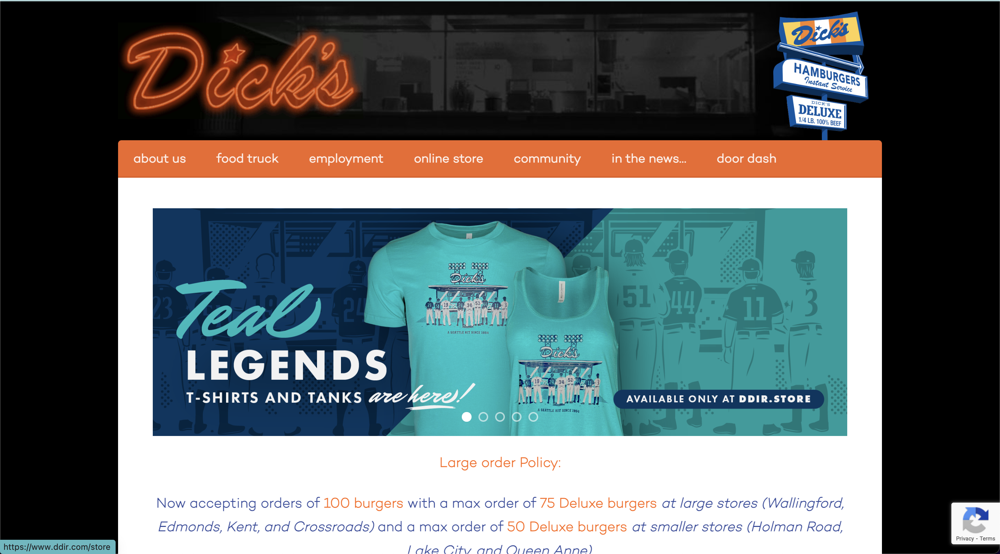
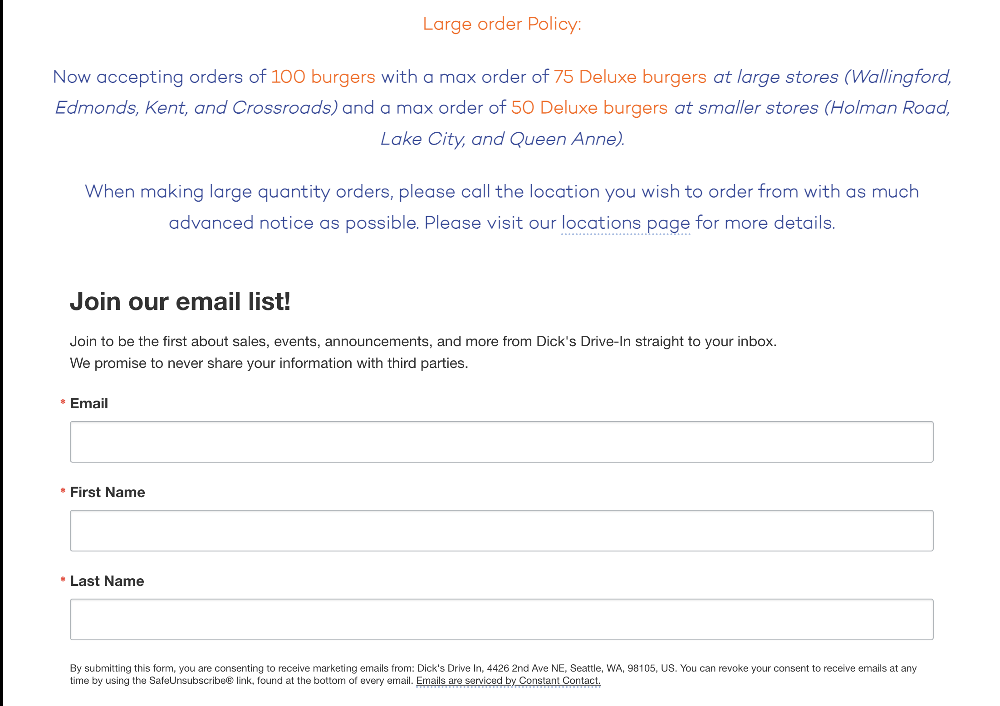
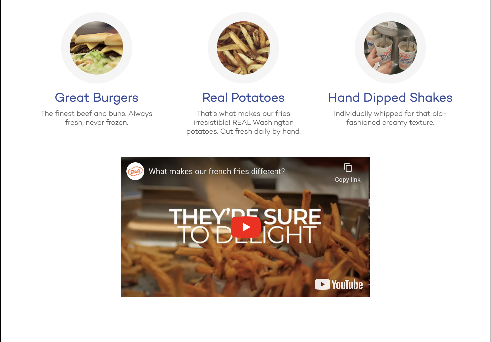
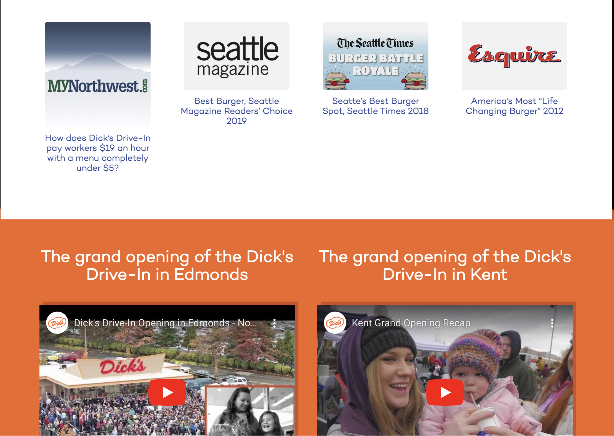
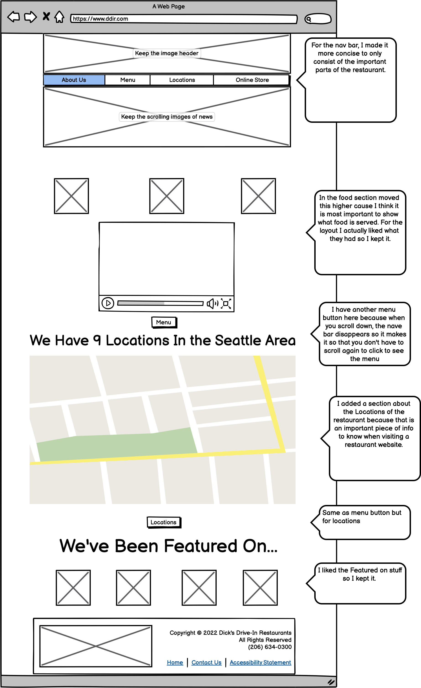
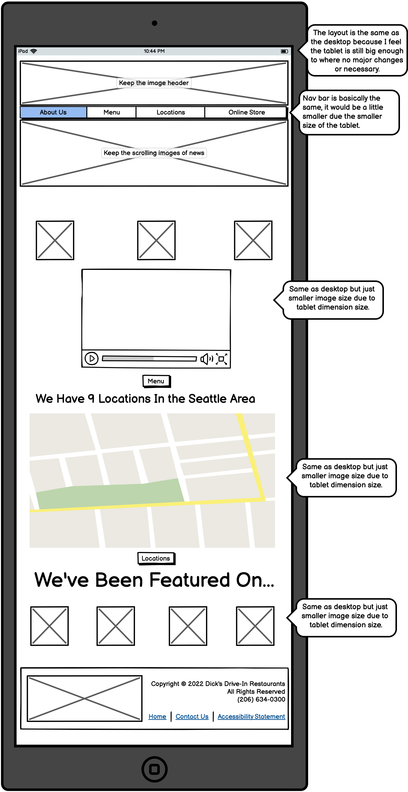
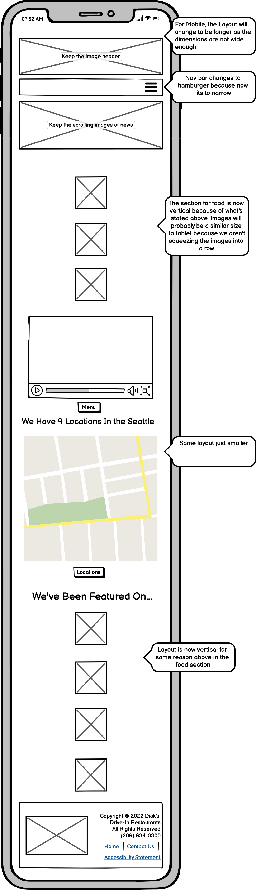
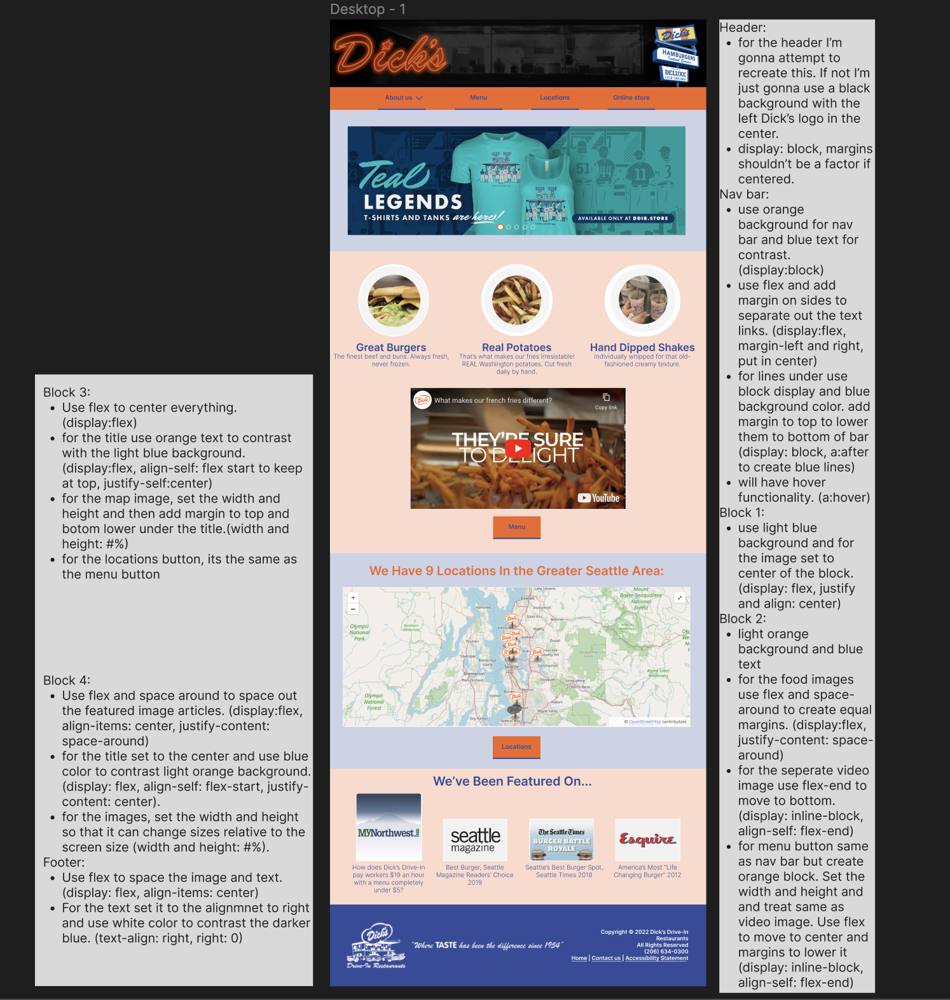
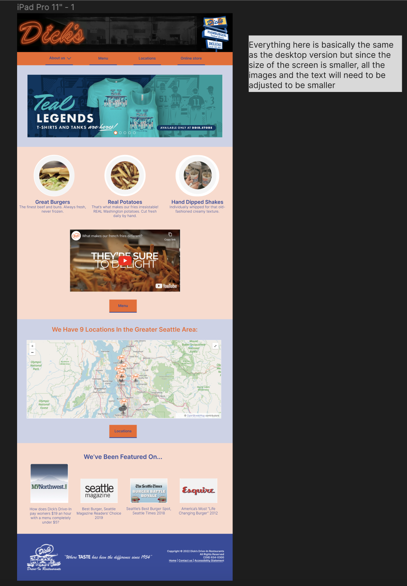
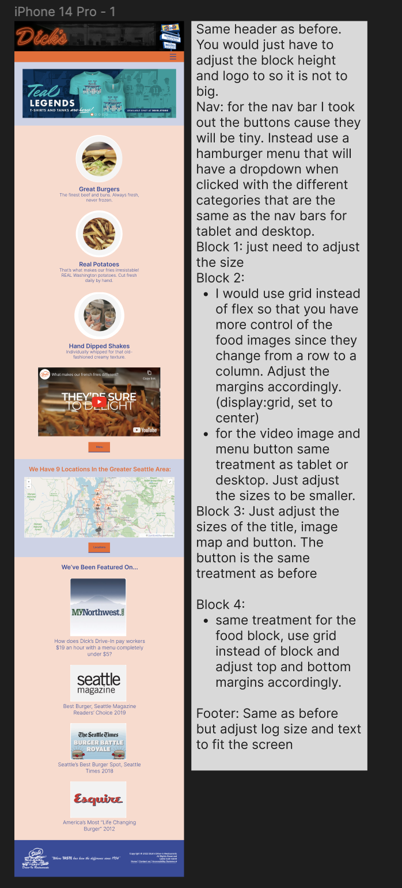

Responsive Redesign Project
1. Selected Website
The selected website I chose to redesign is for Dick's Drive In. I chose this website to redesign because being from Seattle, Dicks Drive In is an absolute staple and my favorite burger fast food restaurant.




2. Usability Problems
- Being a website for a restaurant, on the main page there is no direct indication of the menu (even though it is small) and the restaurant location. A user must go through the tabs above under about us to get to both. I think the main reason why people would visit a restaurant site is to glance at the menu options or see where the restaurant is located. They have a link to the locations page but it’s under large order policy heading so users could disregard everything if they aren’t making a large order
- A lot of the tabs can be under about us as they aren’t super important, like food truck can be under about us instead of its own tab.
- The text changes colors and the contrast may not be very good to see it.
- I think the button tabs can be more obvious that they are buttons. It’s just text inside of a header block.
- There is an awkward space at the end of the header block. Could probably space out the buttons to take up the whole header.
- When you scroll you lose the nav bar, so you have to keep scrolling back and forth to read something and then click the button to direct you somewhere else
- Conceptual Model:
- I think the interface is ok, there are some issues with the navigation buttons as it is not obvious if there is a drop-down menu or not unless you hover over it. Also, the ability to navigate when you scroll down is lost cause there aren’t buttons to take you somewhere after the nav bar. But other than that,
I think that the interface does a pretty good job.
3. Accessibility Problems and Findings
When using WebAIM Wave to find accessibility problems, the main 6 problems it found was in terms of the text. It brought up contrast errors with the few times orange text appears with the white background. I agree with this problem and, I think that the text should just be one color depending on the background color. They use blue, orange, black and white text for a predominantly white background and I think they should just stick to one and use bold lettering for important parts or headers or change the background color to change color of text.
5. Annotated Wireframes
LoFi Desktop

LoFi Tablet

LoFi Mobile

HiFi Desktop

HiFi Tablet

HiFi Mobile

*images in design copied from Dicks Website